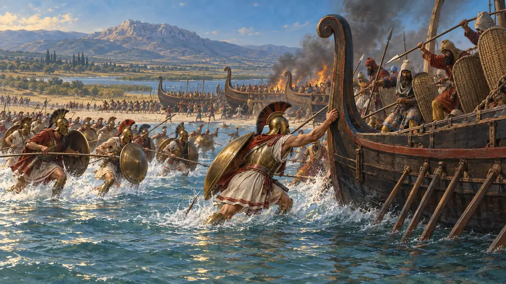
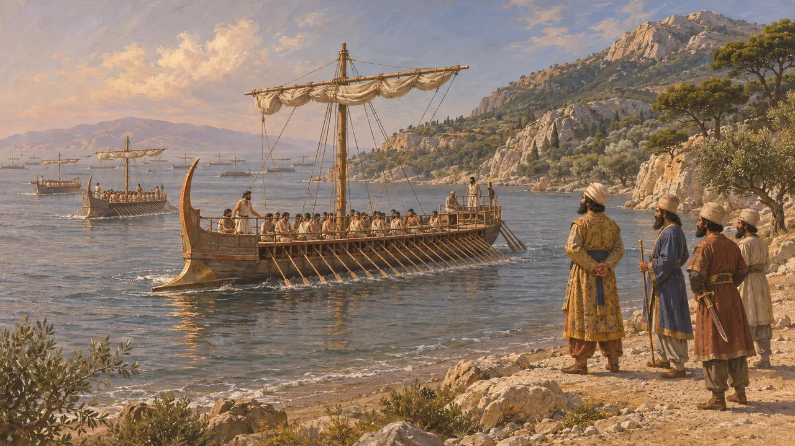
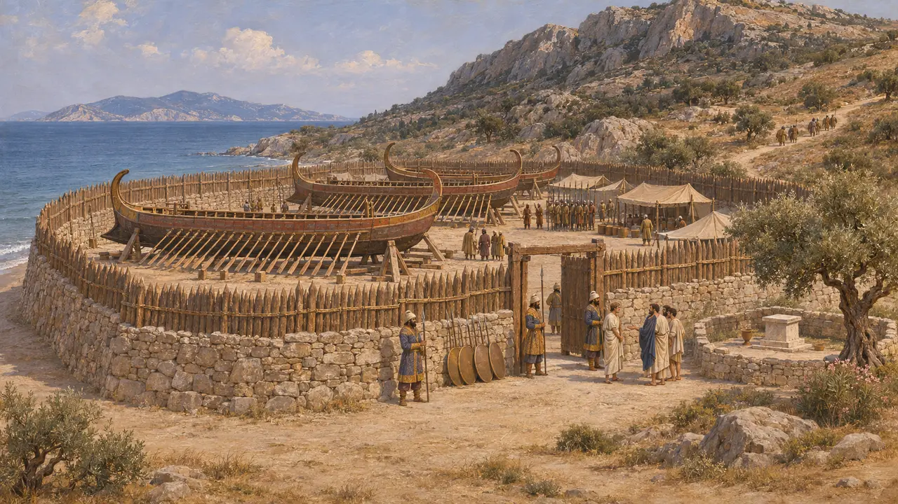
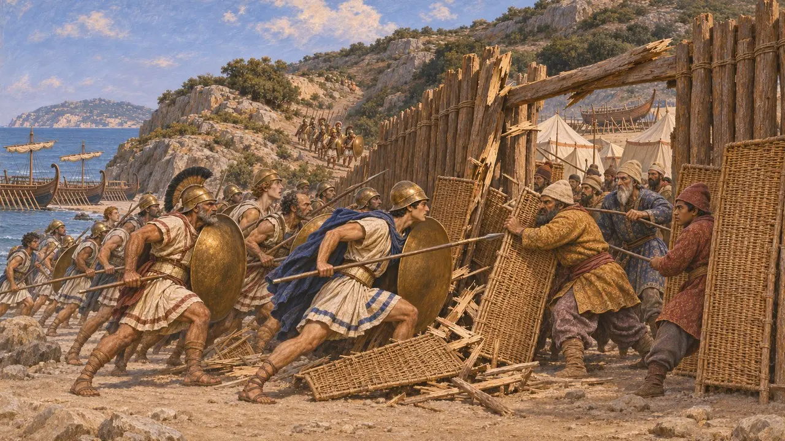
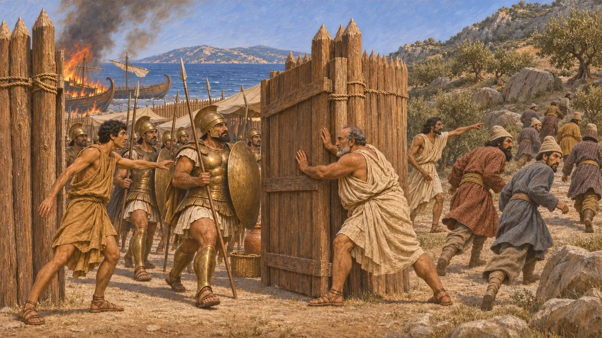
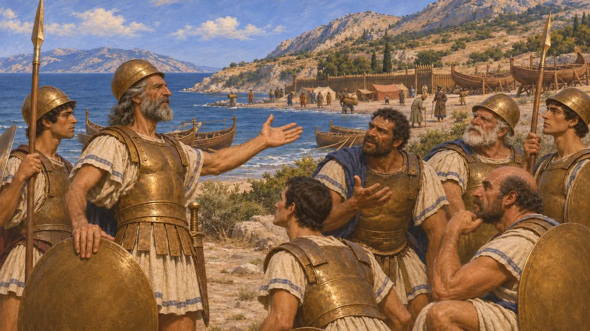

معركة ميكالي
إنزال يوناني على معسكر فارسي في الساحل الأيوني قبالة ساموس، 479 ق.م
في اللعبة: المستوى 11: الخاتمة
في عام 479 ق.م هاجم أسطول يوناني بقيادة ليوتيخيدس الإسبرطي وكسانثيبوس الأثيني جيشًا فارسيًا معسكرًا خلف سياج من الأوتاد حول سفنه المسحوبة إلى الشاطئ في ميكالي، الرأس المقابل لساموس. فانحاز الأيونيون الذين كانوا في الخدمة الفارسية إلى الجانب الآخر، وسقط المعسكر وأُحرقت السفن. وأطلقت الهزيمة ثورة أيونية ثانية ونقلت الحرب من اليونان إلى سواحل آسيا.
في اللعبة: تُظهر الخاتمة ليوتيخيدس وكسانثيبوس وهما ينزلان إلى البر، والأيونيين وهم ينقلبون، والسفن المسحوبة إلى الشاطئ وهي تُحرق. تسمّيها اللعبة آخر سفن الملك، لكن هيرودوت يقول إن السفن الفينيقية كانت قد أُرسلت بعيدًا قبل ذلك.

الأساطيل في ربيع 479 ق.م
رواية قديمةيقول هيرودوت إن أسطول الملك قضى الشتاء عند كيمي، واحتشد عند ساموس في الربيع، وكان نحو 300 سفينة بينها سفن الأيونيين. أما الأسطول اليوناني المؤلف من 110 سفن بقيادة ليوتيخيدس فانتظر عند إيجينا ثم ديلوس، حيث حثّه مبعوثون من ساموس على العبور وتحرير أيونيا. ولما بلغ اليونانيون ساموس، أرسل القادة الفرس السفن الفينيقية بعيدًا وسحبوا بقية السفن إلى البرّ عند ميكالي.
Herodotus 8.130-132, 9.90-96

الحاجز الخشبي عند الشاطئ
رواية قديمةهناك، بحسب هيرودوت، سُحبت السفن إلى اليابسة وأُحيطت بسور من الحجارة والخشب قرب ساحة ديميتر الإليوسينية المقدسة. وحرسها جيش بري بقيادة تيغرانيس؛ ويذكر هيرودوت أن عدده 60,000 رجل، وهو رقم يرى المؤرخون أنه مبالغ فيه على الأرجح. وإذ لم يثق الفرس بأهل ساموس، نزعوا سلاحهم وأرسلوا الميليتيين لحراسة الممرات المؤدية إلى الجبل.
Herodotus 9.96-99

الهجوم على المعسكر
رواية قديمةأبحر ليوتيخيدس أولًا قرب الساحل، وأمر منادٍ بأن يدعو الأيونيين إلى تذكّر حريتهم. وتقدّم الأثينيون ومن معهم من القوات على طول الشاطئ فاخترقوا سور الدروع الخوصية الفارسي ثم السياج الخشبي، بينما التف الإسبرطيون عبر وادٍ ضيق والتلال. قُتل تيغرانيس وماردونتس؛ ويقول هيرودوت إن قائدي الأسطول أرتاينتس وإيثاميتريس نجوَا.
Herodotus 9.98-102

الأيونيون ينقلبون
رواية قديمةيقول هيرودوت إن أهل ساموس، وقد نُزع سلاحهم، ساعدوا اليونانيين بقدر استطاعتهم وتبعهم بقية الأيونيين. وقاد الميليتيون الفرس الفارّين إلى دروب خاطئة وقتلوهم. ويسمّي هذا ثورة أيونيا الثانية على فارس. أحرق اليونانيون السفن والسياج الخشبي، ثم تناقشوا في نقل الأيونيين إلى بلاد اليونان؛ فرفض الأثينيون، وانضمت ساموس وخيوس ولسبوس إلى الحلف بدلاً من ذلك.
Herodotus 9.103-106

يوم واحد، معركتان
متنازع عليهيؤرّخ هيرودوت معركة ميكالي في اليوم نفسه الذي جرت فيه معركة بلاتيا، فبلاتيا في الصباح وميكالي بعد الظهر، ويعدّ الشائعة التي بلغت اليونانيين بنبأ النصر قبل أن يهاجموا علامة من الآلهة. أما ديودورس فيقول إن ليوتيخيدس اختلق الخبر ليشدّ من عزيمة رجاله. ويشكّك مؤرخون كثيرون في دقة هذا التزامن. ولا يذكر أي نص فارسي هذه المعركة، فتبقى الرواية اليونانية وحدها.
Herodotus 9.90, 9.100-101; Diodorus 11.35
المصادر
- Herodotus 9.90-107
- Herodotus 8.130-132
- Diodorus 11.34-37
- Thucydides 1.89
- C. Hignett, Xerxes' Invasion of Greece, 1963
- P. Briant, From Cyrus to Alexander, 2002